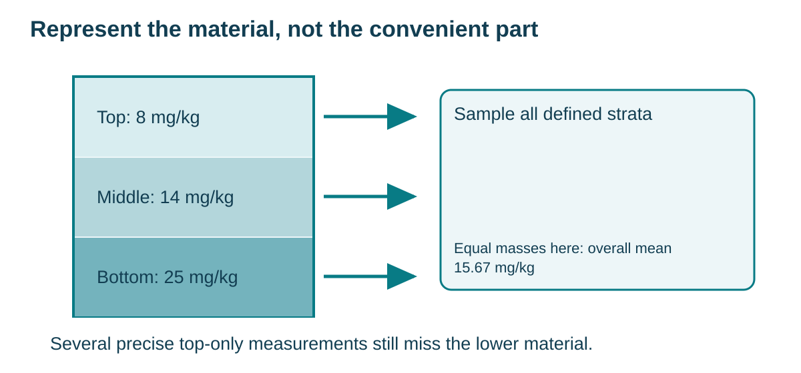
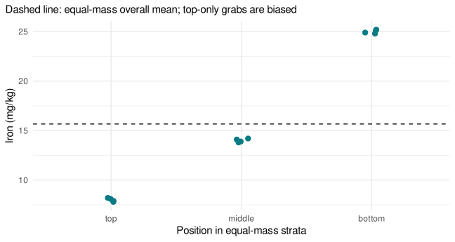
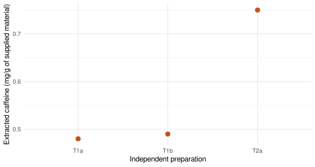
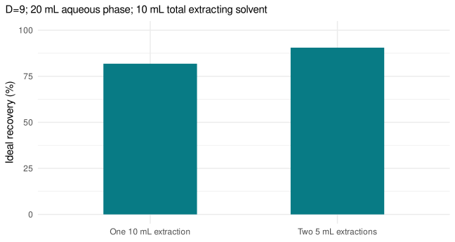

Sampling and preparation
Follow the material through sampling, extraction and dilution
Precision cannot rescue an unrepresentative sample

Where would you take material from this container?
Look within and between positions

Which variation dominates?
Define the sampling target
Bulk mean, spatial variation and maximum are different questions.
Weight the material you mean to represent
Equal masses: (8+14+25)/3=15.67 mg/kg.
More top-only grabs repeat the same mistake
A small SD can coexist with a large sampling bias.
A composite is one combined material
Combining increments does not create independent collected samples.
Storage can change what reaches the instrument

Which process could change an oxidation-state result?
Preservation must fit the measurand

An acid treatment can preserve an elemental amount while changing chemical form.
Filtration, extraction and digestion differ

A clear solution is not proof of complete analyte recovery.
Keep the whole preparation chain

What unit belongs at each stage?
Begin at the measured flask

T1a final concentration: 1.92 mg caffeine/L.
Undo the aliquot dilution

1.92 × 10.00/2.00 = 9.60 mg/L extract.
Report on the original material basis

0.240 mg / 0.5000 g = 0.480 mg/g.
Keep preparation identities
T1a and T1b are two preparations of T1.
Write the mass balance in R
mutate(extract_mg_l = final_caffeine_mg_l * final_ml / aliquot_ml,
extracted_mg = extract_mg_l * extract_ml / 1000,
caffeine_mg_g = extracted_mg / mass_g)
Partitioning depends on concentrations and volumes

D=c_o/c_a; analyte amount exists in both phases.
Recover the fraction from a mass balance

f_o=DV_o/(V_a+DV_o).
Use the same total solvent differently

One 10 mL extraction: 81.8%. Two 5 mL extractions: 90.5%.
Recognise the idealisation

What could invalidate the simple partition calculation?
A late spike misses early losses

Adding analyte after extraction cannot establish extraction recovery.
Transfer the volume chain

0.4000 g → 40.00 mL extract → 1.00 mL to 10.00 mL → 1.50 mg/L.
Choose an improvement that addresses the failure
Would you change sampling, extraction, or repeat readings?
Practise the chemical argument
Open the exercise.
Save the calculation and a chemical interpretation in your reproducible report.
Interactive experiment · Predict, change, explain.